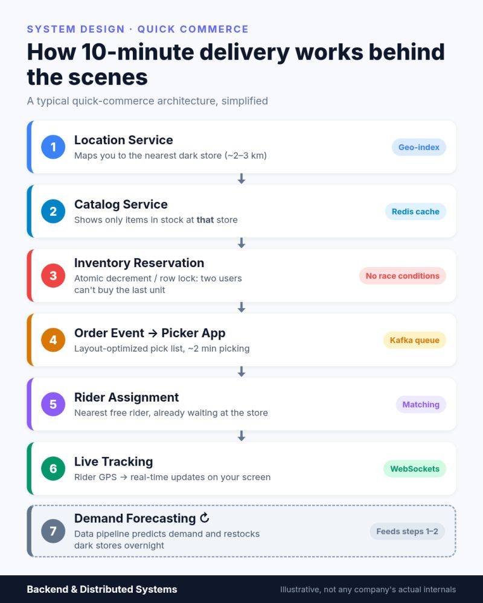

How does Blinkit get milk to your door in 10 minutes? 🛵
Ashmita Pandey · · System Design · Distributed Systems · Retail Tech
How does Blinkit get milk to your door in 10 minutes? 🛵 It's not faster riders. It's system design. Here's what happens in the few seconds after you tap "Order": 1️⃣ Your location picks the store You're mapped to the nearest dark store, a small warehouse just 2–3 km away. The 10 minutes are decided before you even start browsing. 2️⃣ You only see what's really there The catalog is filtered by that one store's live inventory, usually served from a cache like Redis so it loads instantly. 3️⃣ The last packet of milk problem Two people order the last unit at the same moment. Without an atomic decrement or a row lock, both orders succeed and one customer gets a cancellation. Inventory reservation has to be race-proof. 4️⃣ Events, not waiting The order goes onto a queue (think Kafka). The picker's app gets a pick list ordered by the store's layout, so packing takes about 2 minutes. 5️⃣ The rider is already there Riders wait at the dark store. Assignment just picks the nearest free one, and GPS updates stream to your screen over WebSockets. 6️⃣ The real secret is overnight Demand forecasting decides what each dark store stocks for tomorrow. Get that wrong and no amount of speed helps. I work on backend systems for grocery retail, and the hardest part is never the happy path. It's inventory consistency at scale. Which part would you want me to go deeper on next? 👇 #SystemDesign #BackendEngineering #DistributedSystems
